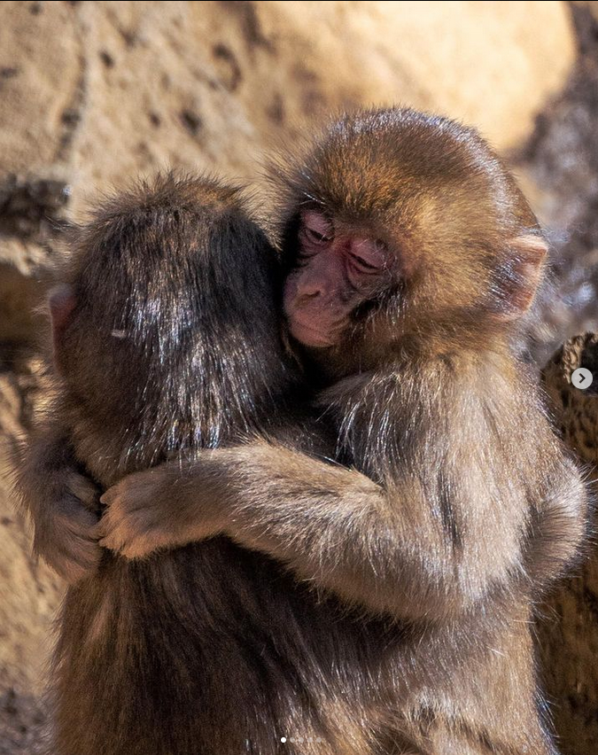

Raktár
Szerencsekerék
Statisztikák
Fotó ID
Róla
szereti a banánt
16 államban körözik gyújtogatáseért
elismert horgász
nagyon szereti a banánt
krónikusan depressziós
egy politikai podcast állandó vendége
imádja a banánt
éjjeli műszakban dolgozik
szerb állampolgár
nem annyira szereti a banánt
lázas
kiváló zsonglőr
imádja a banánt
nemzetközi szinten elismert jégszobrász
Mátyás király leszármazottja
banánfüggő
telefonfüggő
szerencsejátékfüggő
elviseli a banánt
kriminálisan csintalan
helyi legenda
a honvédség legképzettebb banánológusa
beceneve "Budi"
kifogásolhatatlan asztali etikett

társainál csak a banánt szereti jobban
érzékeny alkat
fél a pókoktól
csak banánt eszik
nikotintapasz függő
tehetségtelen énekes
banán a harmadik neve
lakhelye Szeged
kleptomániás
szereti a banánt, de allergiás rá
kriptó-milliomos
még 6 évig nem hagyhatja el az országot
banán nélkül nem hagyja el a házat
imádják a nők
rajonganak érte a nők
banán-ügyileg semleges
van 3 fia
a megye legrosszabb balhátvédje
nem evett még banánt
forklift certified
munkaidőben iszik
szereti a banánt
imádja a banánt
eszi a banánt
banándealer
8 évet ült a sitten
bélyegeket gyűjt
banánmilliomos
Magyarország legveszélyesebb bűnözője
nem hisz a fürdésben
banánfanatikus
utólérhetetlen méhész
hipochonder
banántagadó
fajgyűlölő
hobbikertész